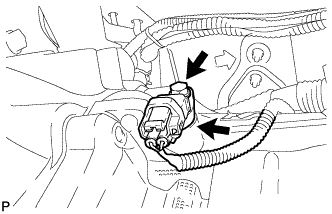
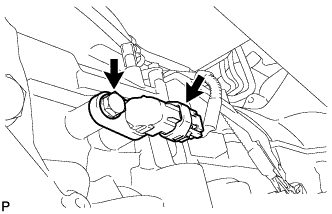

ДАТЧИК ЧАСТОТЫ ВРАЩЕНИЯ > СНЯТИЕ |
| 1. СНИМИТЕ ДАТЧИК ЧАСТОТЫ ВРАЩЕНИЯ NT |
|  |
Отсоедините разъем датчика.
Выверните болт и снимите датчик.
Снимите с датчика уплотнительное кольцо.
| 2. СНИМИТЕ ДАТЧИК ЧАСТОТЫ ВРАЩЕНИЯ SP2 |
|  |
Отсоедините разъем датчика.
Выверните болт и снимите датчик.
Снимите с датчика уплотнительное кольцо.